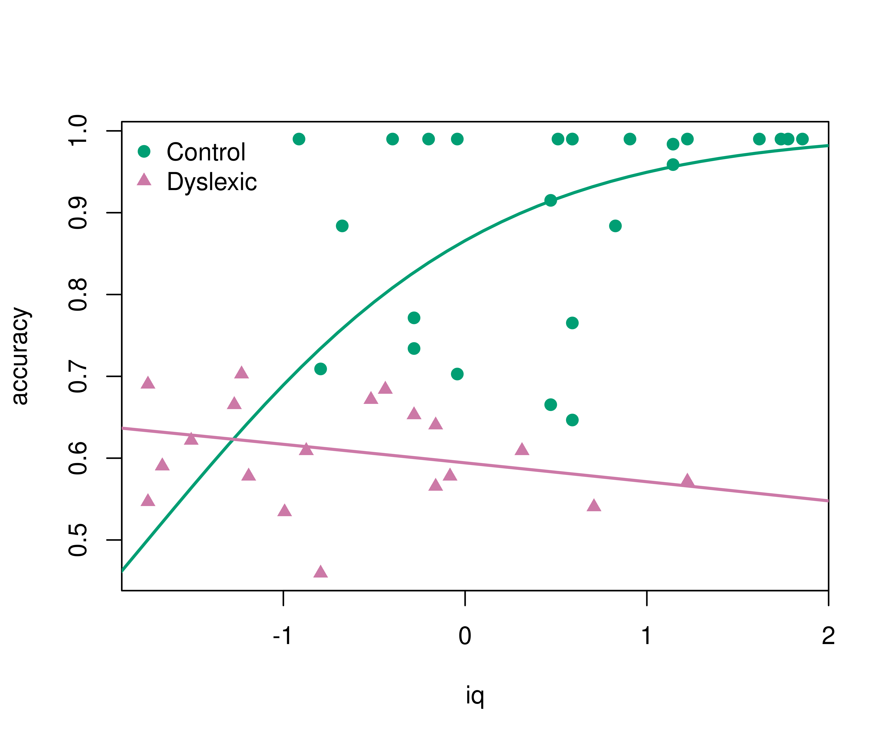

library("betareg")
data("ReadingSkills", package = "betareg")betareg: Beta Regression in R
Overview
Beta regression for modeling beta-distributed dependent variables on the open unit interval (0, 1), e.g., rates and proportions, see Cribari-Neto and Zeileis (2010, doi:10.18637/jss.v034.i02).
Extended-support beta mixture regression models for variables on the closed unit interval [0, 1] with 0 and/or 1 boundary observations see Kosmidis and Zeileis (2024, forthcoming).
Alternative specifications of the classical beta regression model: Bias-corrected and bias-reduced estimation, finite mixture models, and recursive partitioning for (0, 1) beta regression, see Grün, Kosmidis, and Zeileis (2012, doi:10.18637/jss.v048.i11).
Installation
The stable version of betareg is available on CRAN:
install.packages("betareg")The latest development version can be installed from R-universe:
install.packages("betareg", repos = "https://zeileis.R-universe.dev")Getting started
A nice first illustration of beta regression is the analysis of reading accuracy scores from primary school children from Smithson & Verkuilen (2006). Package and data can be loaded via:
The reading accuracy was scaled to be within (0, 1). Its mean is explained by verbal iq score with separate lines by dyslexia (control vs. dyslexic). The precision parameter is explained by main effects of the two explanatory variables. More details are provided in ?ReadingSkills.
br <- betareg(accuracy ~ dyslexia * iq | dyslexia + iq, data = ReadingSkills)
summary(br)
#>
#> Call:
#> betareg(formula = accuracy ~ dyslexia * iq | dyslexia + iq, data = ReadingSkills)
#>
#> Quantile residuals:
#> Min 1Q Median 3Q Max
#> -2.3625 -0.5872 0.3026 0.9425 1.5874
#>
#> Coefficients (mean model with logit link):
#> Estimate Std. Error z value Pr(>|z|)
#> (Intercept) 1.1232 0.1428 7.864 3.73e-15 ***
#> dyslexia -0.7416 0.1428 -5.195 2.04e-07 ***
#> iq 0.4864 0.1331 3.653 0.000259 ***
#> dyslexia:iq -0.5813 0.1327 -4.381 1.18e-05 ***
#>
#> Phi coefficients (precision model with log link):
#> Estimate Std. Error z value Pr(>|z|)
#> (Intercept) 3.3044 0.2227 14.835 < 2e-16 ***
#> dyslexia 1.7466 0.2623 6.658 2.77e-11 ***
#> iq 1.2291 0.2672 4.600 4.23e-06 ***
#> ---
#> Signif. codes: 0 '***' 0.001 '**' 0.01 '*' 0.05 '.' 0.1 ' ' 1
#>
#> Type of estimator: ML (maximum likelihood)
#> Log-likelihood: 65.9 on 7 Df
#> Pseudo R-squared: 0.5756
#> Number of iterations: 25 (BFGS) + 1 (Fisher scoring)The regression summary shows that accuracy increases with iq for the control group but not for the dyslexic group (even slightly decreases). This can be brought out more clearly graphically. This also highlights that the model employs a logit link so that the fitted curves always remain within (0, 1).
pal <- palette.colors()[c(4, 8)]
pch <- c(19, 17)
plot(accuracy ~ iq, data = ReadingSkills, col = pal[dyslexia], pch = pch[dyslexia])
iq <- -30:30/10
lines(iq, predict(br, newdata = data.frame(dyslexia = "no", iq = iq)), col = pal[1], lwd = 2)
lines(iq, predict(br, newdata = data.frame(dyslexia = "yes", iq = iq)), col = pal[2], lwd = 2)
legend("topleft", c("Control", "Dyslexic"), pch = pch, col = pal, bty = "n")
Extended models
For going beyond this basic analysis the following extensions can be considered.
Bias reduction
Bias-reduced estimation (instead of the default maximum likelihood estimation) can be used by adding the argument type = "BR" in betareg(). This slightly shrinks all coefficient estimates but leads to qualitatively identical results.
betareg(accuracy ~ dyslexia * iq | dyslexia + iq, data = ReadingSkills, type = "BR")Extended-support beta regression
To analyze the original accuracy scores in [0, 1] (without scaling the perfect scores of 1 to 0.99) use the variable accuracy1 in the code above. The betareg() model then estimates an additional exceedence parameter that accounts for the boundary probability of a perfect score.
betareg(accuracy1 ~ dyslexia * iq | dyslexia + iq, data = ReadingSkills)Beta regression trees
To find subgroups in a beta regression by recursively splitting subsamples (rather than fixing the dyslexia interaction in advance), beta regression trees can be used:
betatree(accuracy ~ iq | iq, ~ dyslexia + ..., data = ReadingSkills, minsize = 10)See the documentation of betatree() for more details.
Finite mixture models of beta regressions
To find clusters in a beta regression (without even having the dyslexia information), finite mixtures of beta regressions can be used:
betamix(accuracy ~ iq, data = ReadingSkills, k = 3, ...)See the documentation of betamix() for more details.